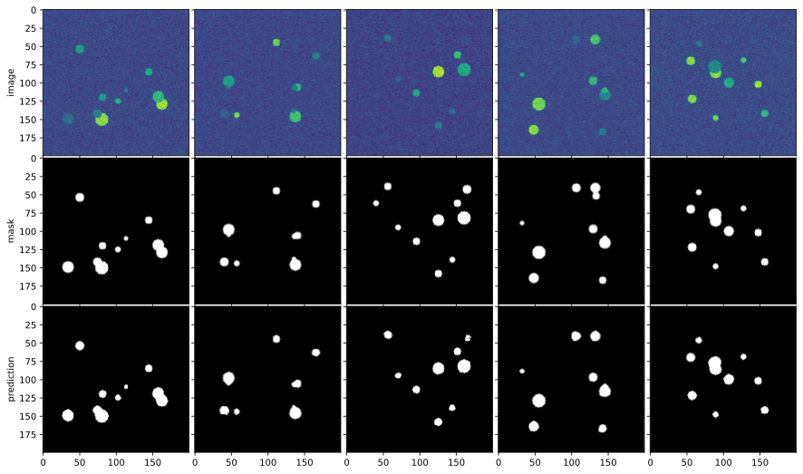

Circles (tensorflow)¶
import os
os.environ['TF_FORCE_GPU_ALLOW_GROWTH'] = 'true'
import tensorflow as tf
import numpy as np
import matplotlib.pyplot as plt
%matplotlib inline
from dOD.tf_model.model import UNet
from dOD.tf_model.datasets import circles
from dOD.tf_model.trainer import Trainer
from dOD.tf_model.layers import crop_image_labels_to_shape
circle_model = UNet(input_shape=(200, 200, 1), kernel_shape=(3, 3),
root_feature=16, depth=3, drop_rate=0.2, num_classes=circles.CLASSES)
circle_model.build_net(True)
circle_model.compile(optimizer='rmsprop')
-------- input shape: (None, 200, 200, 1)
downstream layer 0 shape: (None, 98, 98, 16)
downstream layer 1 shape: (None, 47, 47, 32)
downstream layer 2 shape: (None, 43, 43, 64)
upstream layer 1 shape: (None, 82, 82, 32)
upstream layer 0 shape: (None, 160, 160, 16)
-------- output shape: (None, 160, 160, 2)
train_ds, validation_ds, test_ds = circles.load_data(1000, nx=200, ny=200, splits=(0.7, 0.2, 0.1))
trainer = Trainer(save_ckpt=False)
history = trainer.fit(circle_model.net, train_ds,
validation_dataset=validation_ds, epochs=25, batch_size=5)
Epoch 1/25
140/140 [==============================] - 4s 29ms/step - loss: 0.1553 - binary_crossentropy: 0.1553 - binary_accuracy: 0.9648 - val_loss: 0.0502 - val_binary_crossentropy: 0.0502 - val_binary_accuracy: 0.9858
Epoch 2/25
140/140 [==============================] - 4s 28ms/step - loss: 0.0585 - binary_crossentropy: 0.0585 - binary_accuracy: 0.9867 - val_loss: 0.0437 - val_binary_crossentropy: 0.0437 - val_binary_accuracy: 0.9880
Epoch 3/25
140/140 [==============================] - 4s 28ms/step - loss: 0.0407 - binary_crossentropy: 0.0407 - binary_accuracy: 0.9907 - val_loss: 0.0355 - val_binary_crossentropy: 0.0355 - val_binary_accuracy: 0.9892
Epoch 4/25
140/140 [==============================] - 4s 28ms/step - loss: 0.0406 - binary_crossentropy: 0.0406 - binary_accuracy: 0.9899 - val_loss: 0.0304 - val_binary_crossentropy: 0.0304 - val_binary_accuracy: 0.9913
Epoch 5/25
140/140 [==============================] - 4s 28ms/step - loss: 0.0334 - binary_crossentropy: 0.0334 - binary_accuracy: 0.9925 - val_loss: 0.0263 - val_binary_crossentropy: 0.0263 - val_binary_accuracy: 0.9932
Epoch 6/25
140/140 [==============================] - 4s 28ms/step - loss: 0.0296 - binary_crossentropy: 0.0296 - binary_accuracy: 0.9937 - val_loss: 0.0234 - val_binary_crossentropy: 0.0234 - val_binary_accuracy: 0.9945
Epoch 7/25
140/140 [==============================] - 4s 29ms/step - loss: 0.0272 - binary_crossentropy: 0.0272 - binary_accuracy: 0.9943 - val_loss: 0.0233 - val_binary_crossentropy: 0.0233 - val_binary_accuracy: 0.9944
Epoch 8/25
140/140 [==============================] - 4s 28ms/step - loss: 0.0257 - binary_crossentropy: 0.0257 - binary_accuracy: 0.9946 - val_loss: 0.0217 - val_binary_crossentropy: 0.0217 - val_binary_accuracy: 0.9948
Epoch 9/25
140/140 [==============================] - 4s 28ms/step - loss: 0.0241 - binary_crossentropy: 0.0241 - binary_accuracy: 0.9950 - val_loss: 0.0220 - val_binary_crossentropy: 0.0220 - val_binary_accuracy: 0.9950
Epoch 10/25
140/140 [==============================] - 4s 29ms/step - loss: 0.0233 - binary_crossentropy: 0.0233 - binary_accuracy: 0.9952 - val_loss: 0.0214 - val_binary_crossentropy: 0.0214 - val_binary_accuracy: 0.9955
Epoch 11/25
140/140 [==============================] - 4s 29ms/step - loss: 0.0225 - binary_crossentropy: 0.0225 - binary_accuracy: 0.9954 - val_loss: 0.0201 - val_binary_crossentropy: 0.0201 - val_binary_accuracy: 0.9959
Epoch 12/25
140/140 [==============================] - 4s 29ms/step - loss: 0.0211 - binary_crossentropy: 0.0211 - binary_accuracy: 0.9956 - val_loss: 0.0178 - val_binary_crossentropy: 0.0178 - val_binary_accuracy: 0.9962
Epoch 13/25
140/140 [==============================] - 4s 29ms/step - loss: 0.0210 - binary_crossentropy: 0.0210 - binary_accuracy: 0.9957 - val_loss: 0.0193 - val_binary_crossentropy: 0.0193 - val_binary_accuracy: 0.9958
Epoch 14/25
140/140 [==============================] - 4s 29ms/step - loss: 0.0206 - binary_crossentropy: 0.0206 - binary_accuracy: 0.9957 - val_loss: 0.0180 - val_binary_crossentropy: 0.0180 - val_binary_accuracy: 0.9960
Epoch 15/25
140/140 [==============================] - 4s 29ms/step - loss: 0.0199 - binary_crossentropy: 0.0199 - binary_accuracy: 0.9959 - val_loss: 0.0191 - val_binary_crossentropy: 0.0191 - val_binary_accuracy: 0.9961
Epoch 16/25
140/140 [==============================] - 4s 29ms/step - loss: 0.0199 - binary_crossentropy: 0.0199 - binary_accuracy: 0.9959 - val_loss: 0.0197 - val_binary_crossentropy: 0.0197 - val_binary_accuracy: 0.9961
Epoch 17/25
140/140 [==============================] - 4s 30ms/step - loss: 0.0199 - binary_crossentropy: 0.0199 - binary_accuracy: 0.9957 - val_loss: 0.0187 - val_binary_crossentropy: 0.0187 - val_binary_accuracy: 0.9961
Epoch 18/25
140/140 [==============================] - 4s 29ms/step - loss: 0.0191 - binary_crossentropy: 0.0191 - binary_accuracy: 0.9961 - val_loss: 0.0187 - val_binary_crossentropy: 0.0187 - val_binary_accuracy: 0.9961
Epoch 19/25
140/140 [==============================] - 4s 29ms/step - loss: 0.0189 - binary_crossentropy: 0.0189 - binary_accuracy: 0.9961 - val_loss: 0.0184 - val_binary_crossentropy: 0.0184 - val_binary_accuracy: 0.9962
Epoch 20/25
140/140 [==============================] - 4s 29ms/step - loss: 0.0189 - binary_crossentropy: 0.0189 - binary_accuracy: 0.9961 - val_loss: 0.0187 - val_binary_crossentropy: 0.0187 - val_binary_accuracy: 0.9963
Epoch 21/25
140/140 [==============================] - 4s 29ms/step - loss: 0.0184 - binary_crossentropy: 0.0184 - binary_accuracy: 0.9962 - val_loss: 0.0185 - val_binary_crossentropy: 0.0185 - val_binary_accuracy: 0.9963
Epoch 22/25
140/140 [==============================] - 4s 29ms/step - loss: 0.0183 - binary_crossentropy: 0.0183 - binary_accuracy: 0.9963 - val_loss: 0.0184 - val_binary_crossentropy: 0.0184 - val_binary_accuracy: 0.9963
Epoch 23/25
140/140 [==============================] - 4s 29ms/step - loss: 0.0181 - binary_crossentropy: 0.0181 - binary_accuracy: 0.9963 - val_loss: 0.0182 - val_binary_crossentropy: 0.0182 - val_binary_accuracy: 0.9963
Epoch 24/25
140/140 [==============================] - 4s 30ms/step - loss: 0.0177 - binary_crossentropy: 0.0177 - binary_accuracy: 0.9963 - val_loss: 0.0181 - val_binary_crossentropy: 0.0181 - val_binary_accuracy: 0.9963
Epoch 25/25
140/140 [==============================] - 4s 29ms/step - loss: 0.0179 - binary_crossentropy: 0.0179 - binary_accuracy: 0.9963 - val_loss: 0.0179 - val_binary_crossentropy: 0.0179 - val_binary_accuracy: 0.9963
prediction = circle_model.net.predict(test_ds.batch(batch_size=5))
N = 5
fig, ax = plt.subplots(3, N, sharex=True, sharey=True,
figsize=(N * 3, 9), gridspec_kw={'wspace': 0.01, 'hspace': 0.015})
dataset = test_ds.map(crop_image_labels_to_shape(prediction.shape[1:]) )
for i, (img, label) in enumerate(dataset.take(N)):
ax[0][i].imshow(tf.keras.preprocessing.image.array_to_img(img))
ax[1][i].imshow(np.argmax(label, axis=-1), cmap=plt.cm.gray)
ax[2][i].imshow(np.argmax(prediction[i, ...], axis=-1), cmap=plt.cm.gray)
for i, x in enumerate(['image', 'mask', 'prediction']):
ax[i][0].set_ylabel(x);

train_loss = history.history['loss']
val_loss = history.history['val_loss']
plt.figure()
plt.plot(range(25), train_loss, 'r--', label='training loss')
plt.plot(range(25), val_loss, 'bo', label='validation loss')
plt.title('Training and validation loss')
plt.xlabel('Epoch')
plt.ylabel('Loss')
plt.legend()
plt.show()